Распределительный вал двигателя 1,6i снятие и установкаСнятие 1. Снимаем ремень привода ГPM. 2. Отворачиваем гайку 1 и болт 2 верхнего крепления задней крышки ремня привода ГРМ. 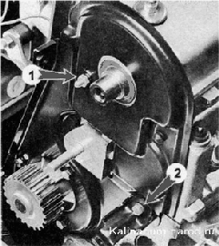
3. Отсоединяем трос привода дроссельной заслонки от сектора и отворачиваем болты крепления кронштейна троса. 4. Отсоединяем колодку проводов от разъема датчика положения распределительного вала. 5. Торцовым ключом на 10 мм отворачиваем болт и две гайки крепления заглушки. 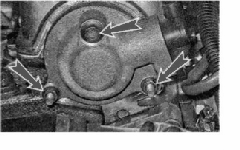 6. На болте крепления заглушки установлено резиновое уплотнительное кольцо. Поврежденное уплотнительное кольцо заменяем. 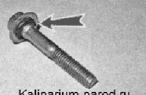 7. Снимаем заглушку. Извлекаем уплотнительное кольцо заглушки. Поврежденное уплотнительное кольцо заменяем. На двигателе сдатчиком положения распределительного вала заглушку можно снять, только если штифт 1 расположен напротив прорези 2. 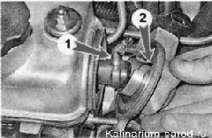
8. Торцовым ключом на 13 мм последовательно (по пол-оборота) отворачиваем десять гаек крепления двух корпусов подшипников. 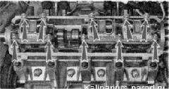9. Снимаем передний корпус подшипников. 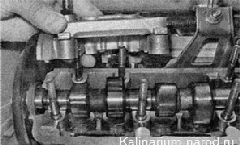 10. Снимаем задний корпус подшипников. 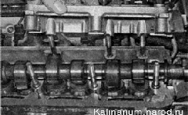
11. Извлекаем распределительный вал из головки блока цилиндров, слегка оттянув заднюю крышку ремня привода ГРМ. 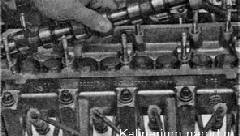
12. Снимаем с распределительного вала сальник. Установка 1. Смазываем шейки распределительного вала чистым моторным маслом. 2. Укладываем распределительный вал в головку блока цилиндров штифтом вверх. 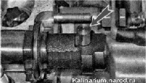
3. Перед установкой корпусов подшипников на привалочную плоскость головки блока в районах переднего сальника... 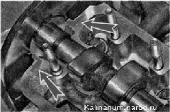 ...и заглушки наносим тонкий слой герметика Локтайл-574 или аналогичного. 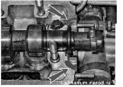 4. Равномерно, в несколько приемов, заворачиваем гайки корпусов подшипников до соприкосновения корпусов с головкой блока цилиндров (соблюдая последовательность, указанную на фото). После этого затягиваем гайки моментом 18,38 - 22,64 Н-м (1,87 - 2,31 кгс-м). 5. Запрессовываем новый сальник распределительного вала. 6. Перед установкой заглушки надеваем на нее уплотнительное кольцо. 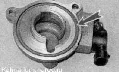7. Дальнейшую сборку выполняем в последовательности, обратной снятию. 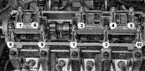
Последовательность затяжки гаек корпусов подшипников |